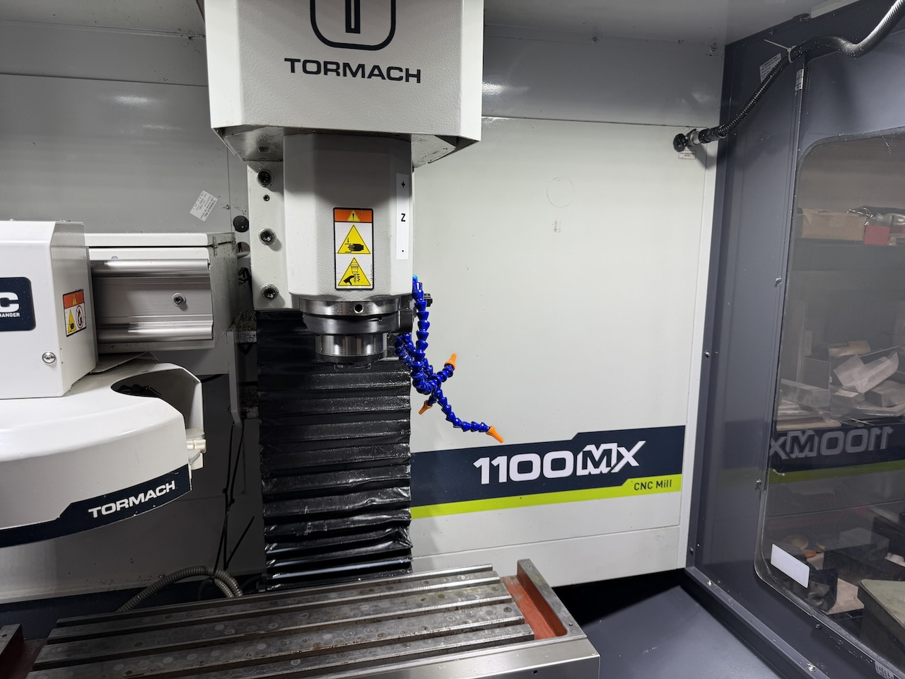
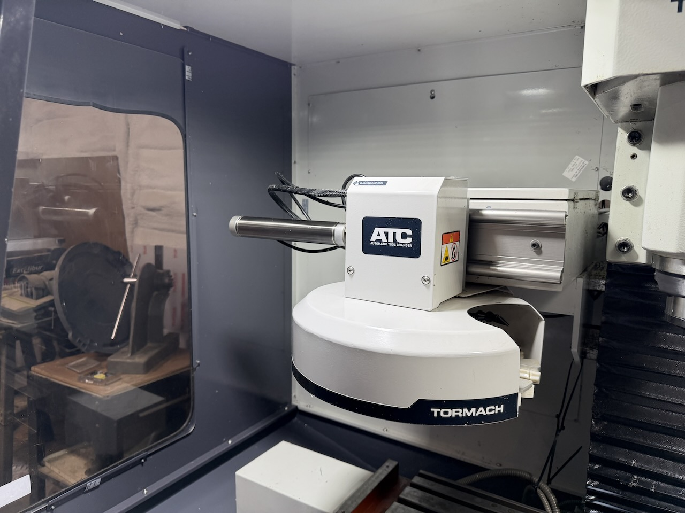
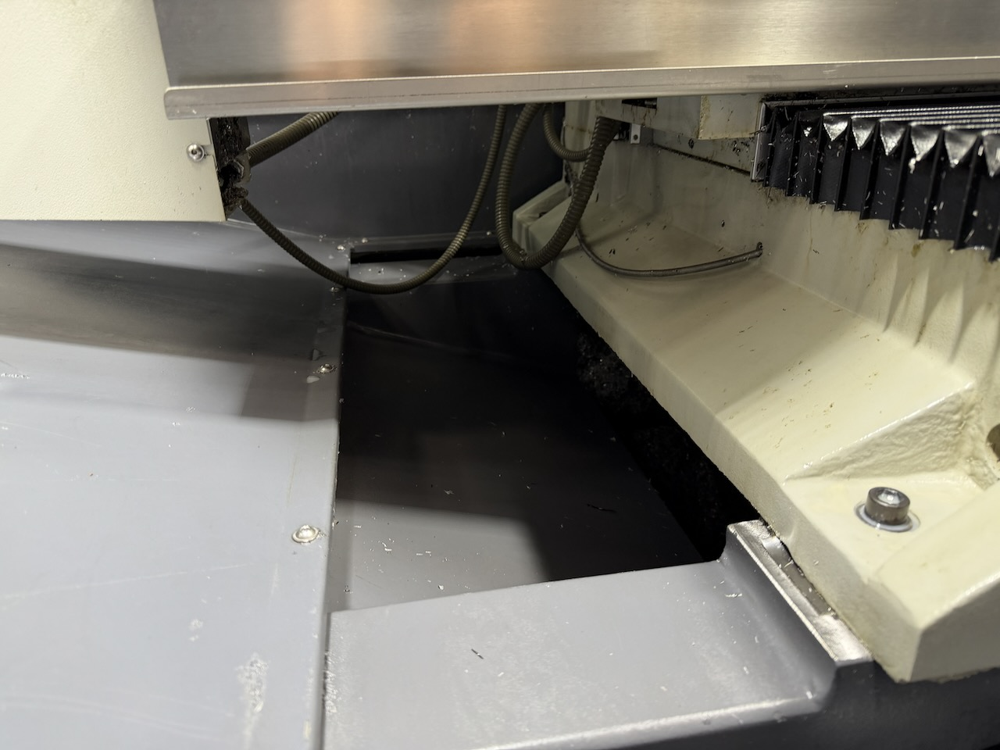
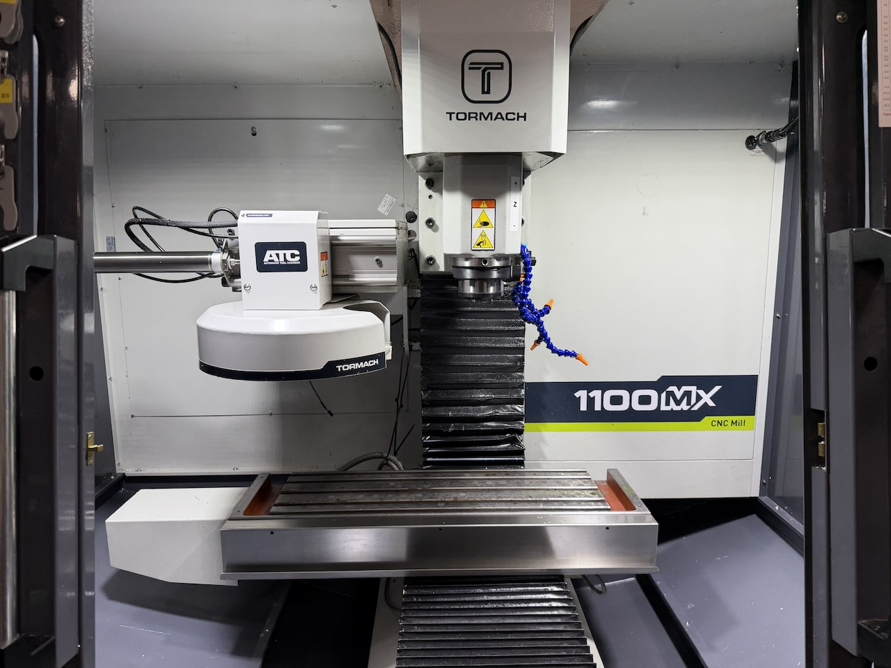
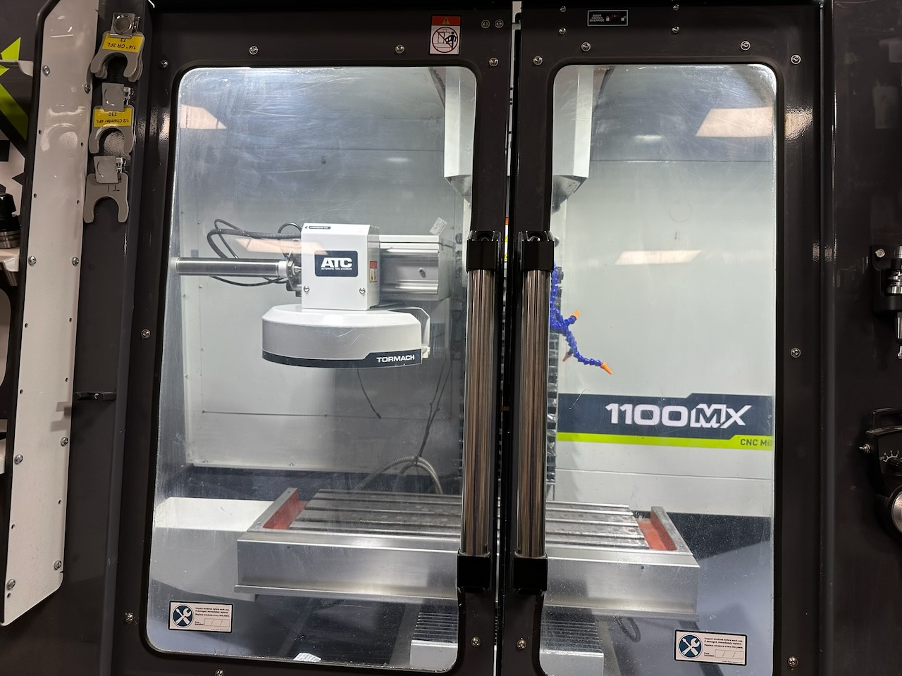
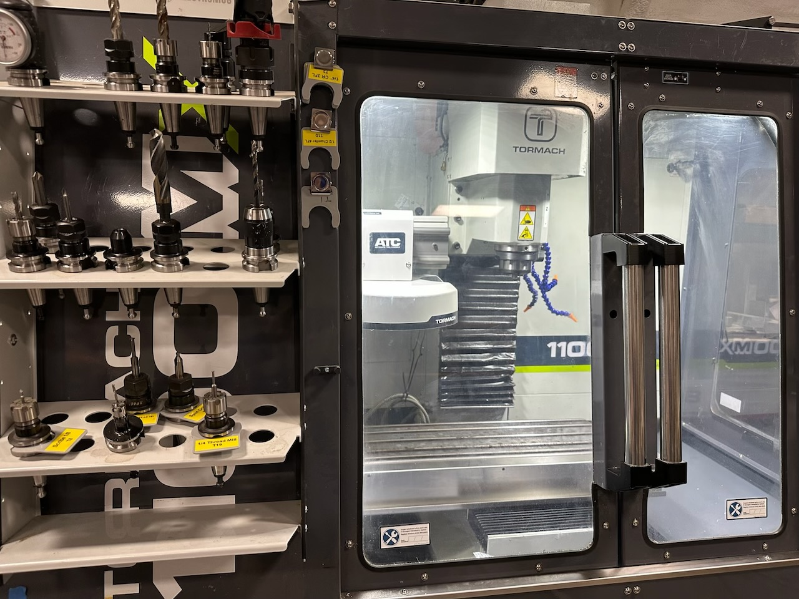
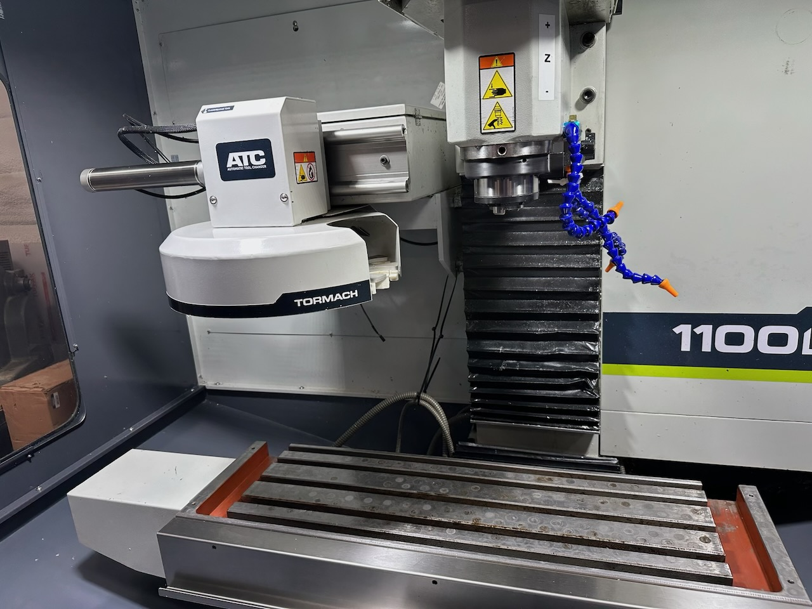
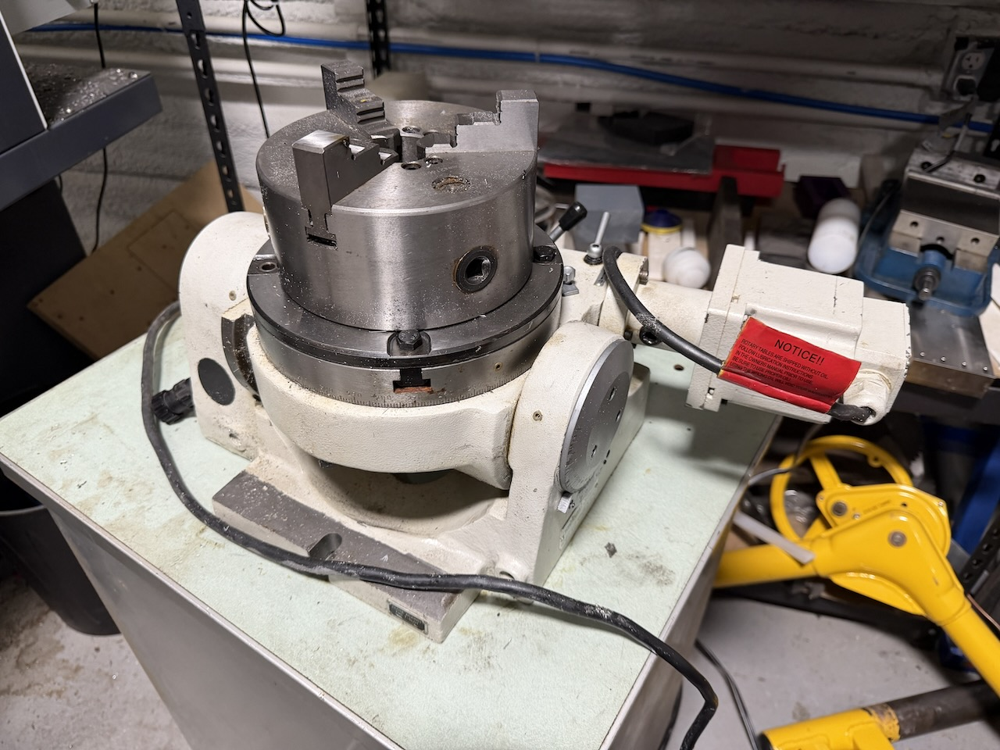
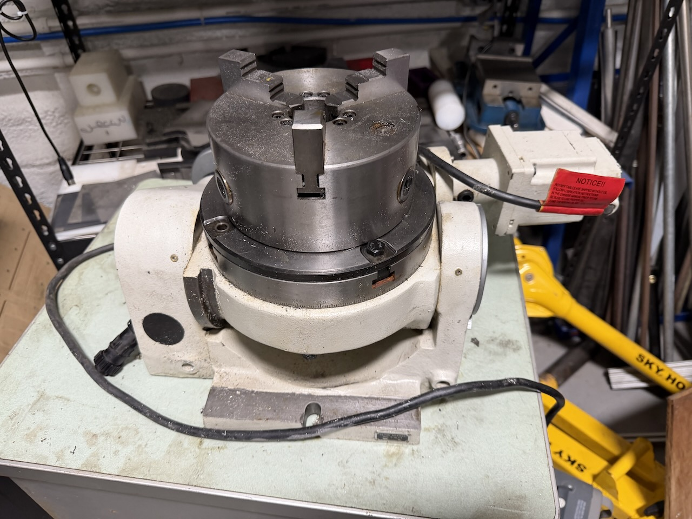

Tormach 1100MX CNC Mill — Fully Loaded Package










Up for sale is a lightly used Tormach 1100MX CNC Mill in excellent condition with no known issues — fully loaded with the complete factory accessory package including 12-pocket automatic tool changer, 4th axis with 8” tilting motorized rotary table, full enclosure, flood coolant, Haimer 3D sensor, electronic tool setting, and much more. This is a turnkey professional CNC milling setup ready to put to work immediately.
The 1100MX is a serious CNC mill from Tormach — belt-drive spindle, rigid frame, and full PathPilot control. Everything you need to run production or prototype work from day one is included in this package. Avoid lead times, avoid spec’ing out accessories one by one — this machine is complete.
- ✓ Tormach 1100MX CNC Mill
- ✓ 1100MX Enclosure Kit
- ✓ 1100MX Chip Tray
- ✓ 1100MX Stand
- ✓ Automatic Oiler Kit
- ✓ Lifting Bar Kit
- ✓ Door Lock Switch Kit
- ✓ PathPilot Operator Console
- ✓ Waterproof Keyboard
- ✓ Waterproof Mouse
- ✓ Passive Probe
- ✓ Haimer 3D Sensor
- ✓ Electronic Tool Setting with Mounting Block
- ✓ Flood Coolant Kit
- ✓ Portable Refractometer Coolant Tester
- ✓ 12-Pocket Automatic Tool Changer
- ✓ 4th Axis Driver and Installation Kit
- ✓ 4th Axis 8” Tilting Motorized Rotary Table
Excellent — lightly used with no known issues. Machine and all accessories are in clean, well-maintained condition and fully operational.
- Lightly used — low hours
- No known issues — machine and all accessories fully operational
- Clean and well maintained throughout
- All included accessories and tooling present and in good condition
Complete the short form below to receive our contact information and pickup address.